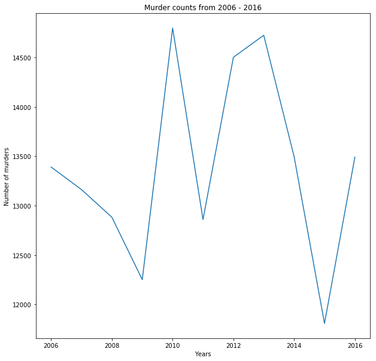
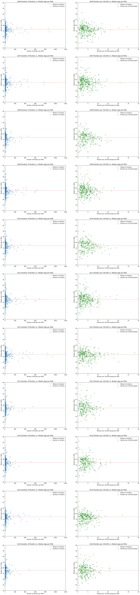
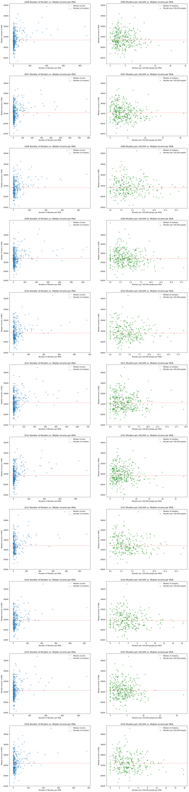
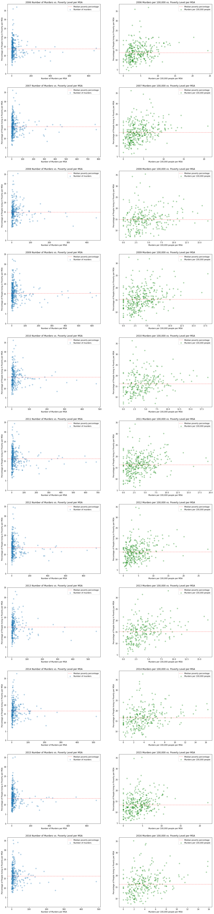
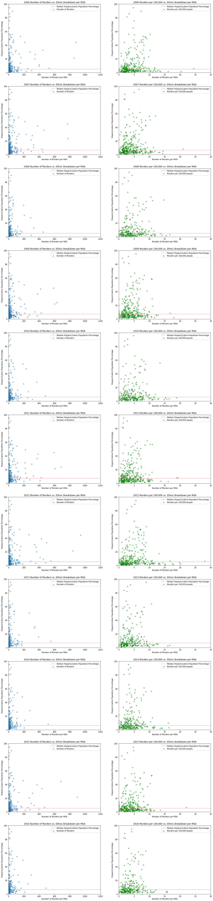
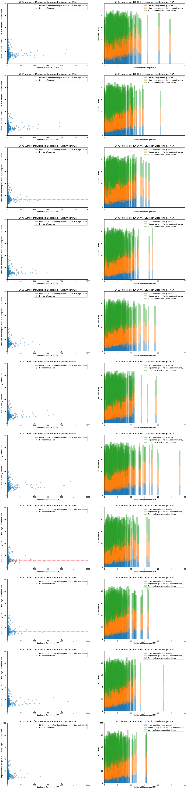
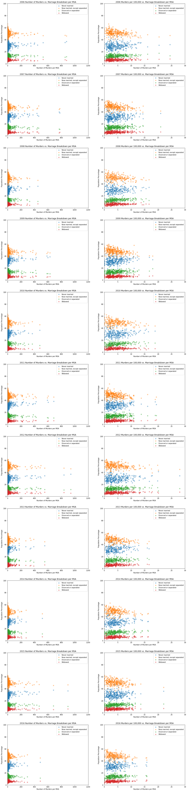
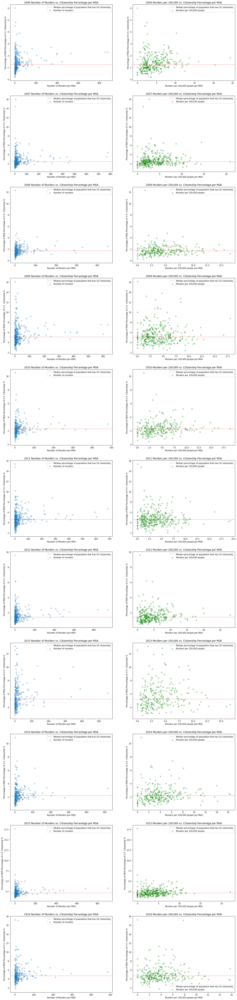
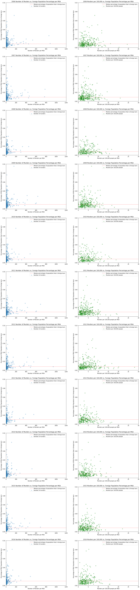
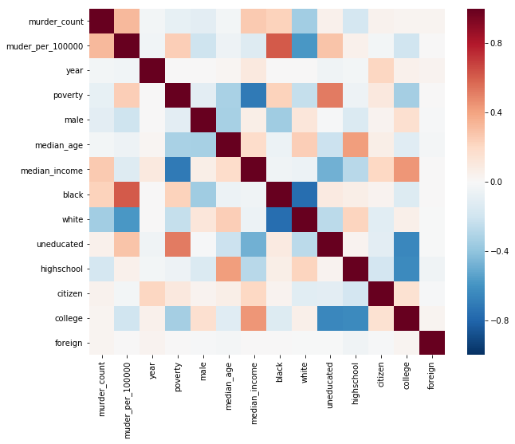

EDA
Contents
- 2 Crime Analysis
- 2.1 Time-Series Consideration: Changes in Crime over Year
- 2.2 Dependent Variable Selection:
- 2.2.1 EDA with respect to Age
- 2.2.2 EDA with respect to Income
- 2.2.3 EDA with respect to the poverty level in each MSA
- 2.2.4 EDA with respect to Sex
- 2.2.5 EDA with respect to Race
- 2.2.6 EDA with respect to Ethnicity
- 2.2.7 EDA with respect to educational attainment
- 2.2.8 EDA with respect to Marital status
- 2.2.9 EDA with respect to U.S. Citizen Population %
- 2.2.10 EDA with respect to Foreign Born Population %
- 2.3 Examine Correlation Matrix of these Variables
- 2.4 Additional Questions
2 Crime Analysis
2.1 Time-Series Consideration: Changes in Crime over Year
For a simple view on a times series basis of the change in total murder counts on a per annum basis, we decided to create a scatter plot as shown in Figure 1. However, time series or the year variable did not seem to have a clear correlation with crime count.
fbi_data_path = 'Crime/data/fbi_data/'census_data_path = 'Crime/data/census/'fbi_filepaths = [f for f in listdir(fbi_data_path) if isfile(join(fbi_data_path, f))]csv_filepaths = [f for f in listdir('csvs/') if isfile(join('csvs/', f))]df_total = pd.read_csv(join('csvs/', csv_filepaths[0]))
columns = ['Metropolitan_Statistical_Area', 'Murder_and_nonnegligent_manslaughter' + '_' + csv_filepaths[0][:-4]]
df_total.columns = columns
for i in range(1, len(csv_filepaths)):
file_path = join('csvs/', csv_filepaths[i])
df = pd.read_csv(file_path)
columns = ['Metropolitan_Statistical_Area', 'Murder_and_nonnegligent_manslaughter' + '_' + csv_filepaths[i][:-4]]
df.columns = columns
df_total = pd.merge(df_total, df, left_on='Metropolitan_Statistical_Area', right_on='Metropolitan_Statistical_Area', how='outer')fig, ax = plt.subplots(1, 1, figsize = (10, 10))
ax.plot(list(range(2006, 2017)), df_total.drop('Metropolitan_Statistical_Area', axis=1).sum().values)
ax.set_xlabel('Years')
ax.set_ylabel('Number of murders')
ax.set_title('Murder counts from 2006 - 2016')Figure 1

census_folder_fps = [f for f in listdir(census_data_path) if isfile(join(census_data_path, f))]census_filepaths = [f for f in census_folder_fps if f[3:] == 'census.csv']def strip_dashes(x):
return ' '.join(' '.join(x.split('-')).split())def merge_df_msa(fbi_df, census_df):
census_mask = census_df['Geography'].isnull()
fbi_mask = fbi_df['Metropolitan_Statistical_Area'].isnull()
df_c = census_df[~census_mask]
df_f = fbi_df[~fbi_mask]
geos = df_c['Geography'].apply(lambda x: x.split('Metro Area')[0].strip())
geos = geos.apply(strip_dashes)
df_c['Geography'] = geos
fbi_geos = df_f['Metropolitan_Statistical_Area'].apply(strip_dashes)
df_f['Metropolitan_Statistical_Area'] = fbi_geos
return pd.merge(df_f, df_c, left_on='Metropolitan_Statistical_Area', right_on='Geography', how='inner').drop('Geography', axis=1)df_dict = dict()
for i in range(0, 11):
df_fbi = pd.read_csv(join('csvs/', csv_filepaths[i]))
df_census = pd.read_csv(join(census_data_path, census_filepaths[i]), skiprows=1).drop(['Id', 'Id2'], axis=1)
columns = [col for col in df_census.columns if 'Native' not in col and 'Margin of Error' not in col]
foreign = [x for x in df_census.columns if 'born outside' in x][0]
non_native = df_census[foreign]
df_census = df_census[columns]
df_census['non_native'] = non_native
df = merge_df_msa(df_fbi, df_census)
# Compute murders per 100,000 people
population = [x for x in df.columns if 'Total population' in x][0]
per_100 = pd.to_numeric(df[population], errors='coerce')/100000.0
df['Murders_per_100000'] = df['Murder_and_nonnegligent_manslaughter']/per_100
df_dict[i + 6] = df2.2 Dependent Variable Selection:
For the count of crime, we decided to use the sum count of murder and nonnegligent manslaughter from the FBI data. However, in order to obtain a more comparable metric, the ‘Murder_and_nonnegligent_manslaughter’ count was transformed on a per 100,000 population–resulting in the ‘murder_per_100000’ response variable. We then stored these merged yearly dataframes into a dictionary called ‘df_dict’ with keys representing the year (i.e. data from 2014 has a key of 14 and the value as the merged dataframe from 2014).
2.2.1 EDA with respect to Age
Surprisingly, median age does not seem to have a clear correlation with crime count. In Figure 2, you will be able to see that median ages are normally distributed on a per MSA basis with not clear correlation with crime. However, since the American Public Health Association claim that age demographic is one of the significant predictors for crime, we decided to incorporate similar age proxies such as ‘ya_percentage’. This ‘ya_percentage’ is created by taking the percentage demographic that are of age 18 to 24 years.
fig, ax = plt.subplots(11, 2, figsize = (20, 90))
counter = 0
for k, v in df_dict.items():
df = v
age = [x for x in v.columns if 'Median age' in x][0]
median_of_medians = np.median(v[age].values)
# Total number of murders vs. Median age
ax[k - 6][0].scatter(v['Murder_and_nonnegligent_manslaughter'], v[age], alpha=0.3, label='Number of murders')
ax[k - 6][0].axhline(median_of_medians, color='r', ls='--', alpha=0.5, label='Median of medians')
ax[k - 6][0].set_ylim([20, 60])
ax[k - 6][0].set_xlim([0, 1200])
ax[k - 6][0].set_xlabel('Number of Murders per MSA')
ax[k - 6][0].set_ylabel('Median Age in MSA')
ax[k - 6][0].legend()
ax[k - 6][0].set_title('{} Number of Murders vs. Median Age per MSA'.format(2000 + k))
# Number of murders per 100,000 people vs. Median age
ax[k - 6][1].scatter(v['Murders_per_100000'], v[age], color='g', alpha=0.3, label='Murders per 100,000 people')
ax[k - 6][1].axhline(median_of_medians, color='r', ls='--', alpha=0.5, label='Median of medians')
ax[k - 6][1].set_ylim([20, 60])
ax[k - 6][1].set_xlim([0, 30])
ax[k - 6][1].set_xlabel('Murders per 100,000 people per MSA')
ax[k - 6][1].set_ylabel('Median Age in MSA')
ax[k - 6][1].legend()
ax[k - 6][1].set_title('{} Murders per 100,000 vs. Median Age per MSA'.format(2000 + k))Figure 2 
2.2.2 EDA with respect to Income
There are no clear insights regarding the median income, either. We expected median income to have a negative correlation with crime count, as such Figure 3 shows a slight negative correlation between median income and murder rate. However, in the Census data, income is further broken down into 8 buckets for each MSA area: ‘$1 to $9,999 or loss’, ‘$10,000 to $14,999’, ‘$15,000 to $24,999’, ‘$25,000 to $34,999’, ‘$35,000 to $49,999’, ‘$50,000 to $64,999’, ‘$65,000 to $74,999’, and ‘$75,000 or more’. Although certain MSA’s are missing those income breakdown, we decided to impute those missing values by taking the overall average on each column. We will compare the performance of a basic model without the income breakdown to the more convoluted one trained with the breakdowns to examine if any significant difference exists.
afig, ax = plt.subplots(11, 2, figsize = (20, 90))
for k, v in df_dict.items():
df = v
income = [x for x in df.columns if 'Median income' in x][0]
income_series = pd.to_numeric(df[income], errors='coerce')
median = np.median(income_series.dropna().values)
# Total number of murders vs Median income
ax[k - 6][0].scatter(df['Murder_and_nonnegligent_manslaughter'], income_series, alpha=0.3, label='Number of murders')
ax[k - 6][0].axhline(median, label='Median income', ls='--', alpha=0.5, color='r')
ax[k - 6][0].set_yticks(range(14000, 40000, 5000))
ax[k - 6][0].set_xlabel('Number of Murders per MSA')
ax[k - 6][0].set_ylabel('Median Income in MSA')
ax[k - 6][0].legend()
ax[k - 6][0].set_title('{} Number of Murders vs. Median Income per MSA'.format(2000 + k))
# Number of murders per 100,000 people vs Median income
ax[k - 6][1].scatter(v['Murders_per_100000'], income_series, color='g', alpha=0.3, label='Murders per 100,000 people')
ax[k - 6][1].axhline(median, color='r', ls='--', alpha=0.5, label='Median of medians')
ax[k - 6][1].set_yticks(range(14000, 40000, 5000))
ax[k - 6][1].set_xlabel('Murders per 100,000 people per MSA')
ax[k - 6][1].set_ylabel('Median Income in MSA')
ax[k - 6][1].legend()
ax[k - 6][1].set_title('{} Murders per 100,000 vs. Median Income per MSA'.format(2000 + k))Figure 3 
2.2.3 EDA with respect to the poverty level in each MSA
Figure 4 shows a fairly clear positive correlation between people living below the poverty line and the murder rate (murders per 100,000), which is as expected. This also poses new questions such as why certain MSA areas have low murder rates but high level of poverty. This could give interesting insights into the causes of murder, as well as improvements we could make to our model using interaction variables with Polynomial Features. We are also considering including a boolean variable of signifying the MSA area is considered a low-income geographic area using the legal definition of 20% or more people living in poverty, but we also are aware of the issues of multicollinearity as this would be imputed from the numeric value of poverty.
fig, ax = plt.subplots(11, 2, figsize = (20, 90))
for k, v in df_dict.items():
df = v
poverty_level = [x for x in df.columns if 'poverty level' in x][0]
poverty_series = pd.to_numeric(df[poverty_level], errors='coerce')
median = np.median(poverty_series.dropna().values)
# Total number of murders vs Percentage of population living below poverty line
ax[k - 6][0].scatter(df['Murder_and_nonnegligent_manslaughter'], poverty_series, alpha=0.3, label='Number of murders')
ax[k - 6][0].axhline(median, label='Median poverty percentage', ls='--', alpha=0.5, color='r')
ax[k - 6][0].set_yticks(range(0, 40, 5))
ax[k - 6][0].set_xlabel('Number of Murders per MSA')
ax[k - 6][0].set_ylabel('Percentage of People living in Poverty per MSA')
ax[k - 6][0].legend()
ax[k - 6][0].set_title('{} Number of Murders vs. Poverty Level per MSA'.format(2000 + k))
# Number of murders per 100,000 vs Percentage of population living below poverty line
ax[k - 6][1].scatter(v['Murders_per_100000'], poverty_series, color='g', alpha=0.3, label='Murders per 100,000 people')
ax[k - 6][1].axhline(median, color='r', ls='--', alpha=0.5, label='Median poverty percentage')
ax[k - 6][0].set_yticks(range(0, 40, 5))
ax[k - 6][1].set_xlabel('Murders per 100,000 people per MSA')
ax[k - 6][1].set_ylabel('Percentage of People living in Poverty per MSA')
ax[k - 6][1].legend()
ax[k - 6][1].set_title('{} Murders per 100,000 vs. Poverty Level per MSA'.format(2000 + k))Figure 4

2.2.4 EDA with respect to Sex
We did not expect gender to have any strong correlation to murder. Figure 5 shows that gender division per MSA hovers close to 50% with a normal distribution. However, sex might be an interesting variable especially for those MSA’s with a skewed gender balance.
fig, ax = plt.subplots(11, 2, figsize = (20, 90))
for k, v in df_dict.items():
df = v
male = [x for x in df.columns if 'Male' in x][0]
male_series = pd.to_numeric(df[male], errors='coerce')
median = np.median(male_series.dropna().values)
# Total number of murders vs. Percentage of population that is male
ax[k - 6][0].scatter(df['Murder_and_nonnegligent_manslaughter'], male_series, alpha=0.3, label='Number of murders')
ax[k - 6][0].axhline(median, label='Median percentage of population that is male', alpha=0.5, color='r', ls='--')
ax[k - 6][0].set_ylim([46, 60])
ax[k - 6][0].set_xlim([0, 1200])
ax[k - 6][0].set_xlabel('Number of Murders per MSA')
ax[k - 6][0].set_ylabel('Percentage of MSA Population that is Male')
ax[k - 6][0].legend()
ax[k - 6][0].set_title('{} Number of Murders vs. Male Population Percentage per MSA'.format(2000 + k))
# Number of murders per 100,000 vs Percentage of population that is male
ax[k - 6][1].scatter(v['Murders_per_100000'], male_series, color='g', alpha=0.3, label='Murders per 100,000 people')
ax[k - 6][1].axhline(median, color='r', ls='--', alpha=0.5, label='Median percentage of population that is male')
ax[k - 6][1].set_ylim([46, 60])
ax[k - 6][1].set_xlim([0, 30])
ax[k - 6][1].set_xlabel('Murders per 100,000 people per MSA')
ax[k - 6][1].set_ylabel('Percentage of MSA Population that is Male')
ax[k - 6][1].legend()
ax[k - 6][1].set_title('{} Murders per 100,000 vs. Male Population Percentage per MSA'.format(2000 + k))Figure 5

2.2.5 EDA with respect to Race
Figure 6 shows interesting but possibly misleading results. It is clear there is a positive correlation between the Black/African American percentage of the population and crime. By extension, there is a negative correlation between the white percentage of the population. However, correlation does not imply causation. Interactive variables could provide deeper insights of demographic make-up; for example, low income is closely correlated with percentage of people living below the poverty line both of which may have certain correlation with race demographics. That being said, there may still be some additional insights such as racial tensions that can be drawn, so we would likely include the racial breakdown of an MSA in the model. As for granularity in our data, we realized that the majority rows had missing values for ‘Asian’ and ‘Some Other Race’ columns were missing, so we might drop these variables. We also have few rows with missing values for the ‘Black or African American’ variable, but we will substitute those with the imputed mean.
fig, ax = plt.subplots(11, 2, figsize = (20, 90))
for k, v in df_dict.items():
df = v
races = [x for x in df.columns if 'RACE AND HISPANIC OR LATINO ORIGIN' in x]
del races[0]
for race in races[:-1]:
label = race.split('-')[-1].strip()
race_series = pd.to_numeric(df[race], errors='coerce').fillna(0)
# Total number of murders vs. Racial Breakdown
ax[k - 6][0].scatter(df['Murder_and_nonnegligent_manslaughter'], race_series, alpha=0.4, label=label)
ax[k - 6][0].set_ylim([0, 100])
ax[k - 6][0].set_xlim([0, 1200])
# Murders per 100,000 vs. Racial Breakdown
ax[k - 6][1].scatter(df['Murders_per_100000'], race_series, alpha=0.4, label=label)
ax[k - 6][1].set_ylim([0, 100])
ax[k - 6][1].set_xlim([0, 30])
ax[k - 6][0].set_xlabel('Number of Murders per MSA')
ax[k - 6][0].set_ylabel('Population Percentage'.format(label))
ax[k - 6][0].legend()
ax[k - 6][0].set_title('{} Number of Murders vs. Racial Breakdown per MSA'.format(2000 + k))
ax[k - 6][1].set_xlabel('Number of Murders per MSA')
ax[k - 6][1].set_ylabel('Population Percentage'.format(label))
ax[k - 6][1].legend()
ax[k - 6][1].set_title('{} Murders per 100,000 vs. Racial Breakdown per MSA'.format(2000 + k))Figure 6

2.2.6 EDA with respect to Ethnicity
Figure 7 also produce interesting but possibly misleading results as well. It is clear there is a positive correlation between the Hispanic or Latino percentage of the population and the murder rate. The correlation looks to be steeper than the trend observed in the previous visualizations. However, again, correlation does not imply causation. We will have to consider similar methods as with other race demographics.
fig, ax = plt.subplots(11, 2, figsize = (20, 90))
for k, v in df_dict.items():
df = v
ethnicity = [x for x in df.columns if 'Hispanic or Latino' in x][0]
ethnic_series = pd.to_numeric(df[ethnicity], errors='coerce').fillna(0)
median = np.median(ethnic_series.values)
# Total number of murders vs. Ethnic Breakdown
ax[k - 6][0].scatter(df['Murder_and_nonnegligent_manslaughter'], ethnic_series, alpha=0.4, label='Number of Murders')
ax[k - 6][0].axhline(median, label='Median Hispanic/Latino Population Percentage', ls='--', alpha=0.5, color='r')
ax[k - 6][0].set_ylim([0, 100])
ax[k - 6][0].set_xlim([0, 1200])
ax[k - 6][0].set_xlabel('Number of Murders per MSA')
ax[k - 6][0].set_ylabel('Hispanic/Latino Population Percentage'.format(label))
ax[k - 6][0].legend()
ax[k - 6][0].set_title('{} Number of Murders vs. Ethnic Breakdown per MSA'.format(2000 + k))
# Murders per 100,000 vs. Ethnic Breakdown
ax[k - 6][1].scatter(df['Murders_per_100000'], ethnic_series, alpha=0.4, label='Murders per 100,000 people', color='g')
ax[k - 6][1].axhline(median, label='Median Hispanic/Latino Population Percentage', ls='--', alpha=0.5, color='r')
ax[k - 6][1].set_ylim([0, 100])
ax[k - 6][1].set_xlim([0, 30])
ax[k - 6][1].set_xlabel('Number of Murders per MSA')
ax[k - 6][1].set_ylabel('Hispanic/Latino Population Percentage'.format(label))
ax[k - 6][1].legend()
ax[k - 6][1].set_title('{} Murders per 100,000 vs. Ethnic Breakdown per MSA'.format(2000 + k))Figure 7

2.2.7 EDA with respect to educational attainment
Figure 8 is a different visualization technique to help with this EDA. The bar graph indicates some interesting results: there is a slight negative correlation between level of education and the murder rate. The higher the proportion of population with less than high school graduations, the higher the murder rate. This is also true for the higher the rate of population with high school education, though it appears these trends counteract each other (when high school grad rates are high, the opposite rate is low, but there is still a higher murder count). Education does seem to be a very interesting variable, and the Census data provide us with the composition of education attainment in five categories: less than high school graduate, high school graduate and equivalence, some college or associate’s degree, bachelor’s degree, and graduate or professional degree. To address issues of multicollinearity, we decided to sum some college or higher attainment of education in our model.
fig, ax = plt.subplots(11, 2, figsize = (20, 90))
for k, v in df_dict.items():
df = v
educations = [x for x in df.columns if 'EDUCATIONAL ATTAINMENT' in x]
del educations[0]
for i, education in enumerate(educations[:-2]):
label = education.split('-')[-1].strip()
ed_series = pd.to_numeric(df[education], errors='coerce').fillna(0)
# Murders per 100,000 vs. Education Breakdown
width = 0.5
if i ==0:
ax[k - 6][1].bar(df['Murders_per_100000'], ed_series, alpha=0.4, label=label, width=width)
elif i == 1:
prev_series = pd.to_numeric(df[educations[i - 1]], errors='coerce').fillna(0)
ax[k - 6][1].bar(df['Murders_per_100000'], ed_series, bottom=prev_series, alpha=0.4, label=label, width=width)
else:
prev_series_1 = pd.to_numeric(df[educations[i - 1]], errors='coerce').fillna(0)
prev_series_2 = pd.to_numeric(df[educations[i - 2]], errors='coerce').fillna(0)
ax[k - 6][1].bar(df['Murders_per_100000'], ed_series, bottom=prev_series_1 + prev_series_2,
alpha=0.4, label=label, width=width)
ax[k - 6][1].set_ylim([0, 100])
ax[k - 6][1].set_xlim([0, 30])
less_than_hs = pd.to_numeric(df[educations[0]], errors='coerce').fillna(0)
median = np.median(less_than_hs)
ax[k - 6][0].scatter(df['Murder_and_nonnegligent_manslaughter'],
less_than_hs, alpha=0.4, label='Number of murders')
ax[k - 6][0].axhline(median, label='Median Percent of the Population with less than high school', ls='--', alpha=0.5, color='r')
ax[k - 6][0].set_ylim([0, 100])
ax[k - 6][0].set_xlim([0, 1200])
ax[k - 6][0].set_xlabel('Number of Murders per MSA')
ax[k - 6][0].set_ylabel('Population Percentage with less than a high school education'.format(label))
ax[k - 6][0].legend()
ax[k - 6][0].set_title('{} Number of Murders vs. Education Breakdown per MSA'.format(2000 + k))
ax[k - 6][1].set_xlabel('Number of Murders per MSA')
ax[k - 6][1].set_ylabel('Education Levels'.format(label))
ax[k - 6][1].legend()
ax[k - 6][1].set_title('{} Murders per 100,000 vs. Education Breakdown per MSA'.format(2000 + k))Figure 8 
2.2.8 EDA with respect to Marital status
We suspected to see a higher correlation with this variable, but Figure 9 doesn’t show any insights of any relationship to the dependent variable. Perhaps a very slight positive correlation with single/separated and a very slight negative correlation with married.
fig, ax = plt.subplots(11, 2, figsize = (20, 90))
for k, v in df_dict.items():
df = v
marriage = [x for x in df.columns if 'MARITAL STATUS' in x]
del marriage[0]
for status in marriage:
label = status.split('-')[-1].strip()
marriage_series = pd.to_numeric(df[status], errors='coerce').fillna(0)
# Total number of murders vs. Marriage Breakdown
ax[k - 6][0].scatter(df['Murder_and_nonnegligent_manslaughter'], marriage_series, alpha=0.4, label=label)
ax[k - 6][0].set_ylim([0, 100])
ax[k - 6][0].set_xlim([0, 1200])
# Murders per 100,000 vs. Marriage Breakdown
ax[k - 6][1].scatter(df['Murders_per_100000'], marriage_series, alpha=0.4, label=label)
ax[k - 6][1].set_ylim([0, 100])
ax[k - 6][1].set_xlim([0, 30])
ax[k - 6][0].set_xlabel('Number of Murders per MSA')
ax[k - 6][0].set_ylabel('Population Percentage'.format(label))
ax[k - 6][0].legend()
ax[k - 6][0].set_title('{} Number of Murders vs. Marriage Breakdown per MSA'.format(2000 + k))
ax[k - 6][1].set_xlabel('Number of Murders per MSA')
ax[k - 6][1].set_ylabel('Population Percentage'.format(label))
ax[k - 6][1].legend()
ax[k - 6][1].set_title('{} Murders per 100,000 vs. Marriage Breakdown per MSA'.format(2000 + k))Figure 9 
2.2.9 EDA with respect to U.S. Citizen Population %
Figure 10 shows that percentage of U.S. Citizens in each MSA has a very slightly positive or almost no correlation with murder rate. Therefore, we will also look into a similar variable: the non-native variable, which we will impute by taking the total number of foreign-born population by the total population of each MSA.
fig, ax = plt.subplots(11, 2, figsize = (20, 90))
for k, v in df_dict.items():
df = v
citizen = [x for x in df.columns if 'Citizenship' in x][0]
citizen_series = pd.to_numeric(df[citizen], errors='coerce').fillna(0)
median = np.median(citizen_series.values)
# Total number of murders vs. Percentage of US citizens
ax[k - 6][0].scatter(df['Murder_and_nonnegligent_manslaughter'], citizen_series, alpha=0.3, label='Number of murders')
ax[k - 6][0].axhline(median, label='Median percentage of population that has US citizenship', alpha=0.5, color='r', ls='--')
ax[k - 6][0].set_xlabel('Number of Murders per MSA')
ax[k - 6][0].set_ylabel('Percentage of MSA Percentage of U.S. Citizenship %')
ax[k - 6][0].legend()
ax[k - 6][0].set_title('{} Number of Murders vs. Citizenship Percentage per MSA'.format(2000 + k))
# Number of murders per 100,000 vs P Percentage of US citizens
ax[k - 6][1].scatter(v['Murders_per_100000'], citizen_series, color='g', alpha=0.3, label='Murders per 100,000 people')
ax[k - 6][1].axhline(median, color='r', ls='--', alpha=0.5, label='Median percentage of population that has US citizenship')
ax[k - 6][1].set_xlabel('Murders per 100,000 people per MSA')
ax[k - 6][1].set_ylabel('Percentage of MSA Percentage of U.S. Citizenship %')
ax[k - 6][1].legend()
ax[k - 6][1].set_title('{} Murders per 100,000 vs. Citizenship Percentage per MSA'.format(2000 + k))Figure 10

2.2.10 EDA with respect to Foreign Born Population %
Similar to citizenship, Figure 11 shows that non-native demographic of an area has a slightly positive or almost no correlation between citizenship and murder rate. More importantly, non-native demographic seems to be also skewed to the right, suggesting that there are certain MSA areas with higher foreign proportion than other MSA’s.
fig, ax = plt.subplots(11, 2, figsize = (20, 90))
for k, v in df_dict.items():
df = v
non_native_series = pd.to_numeric(df['non_native'], errors='coerce').fillna(0)
pop_series = pd.to_numeric(df['Total; Estimate; Total population'], errors='coerce').fillna(1)
foreign_series = non_native_series / pop_series
median = np.median(foreign_series.values)
# Total number of murders vs. Percentage of foreign population (born outside US)
ax[k - 6][0].scatter(df['Murder_and_nonnegligent_manslaughter'], foreign_series, alpha=0.3, label='Number of murders')
ax[k - 6][0].axhline(median, label='Median percentage of population that is foreign born', alpha=0.5, color='r', ls='--')
ax[k - 6][0].set_ylim([0, 0.1])
ax[k - 6][0].set_xlim([0, 1200])
ax[k - 6][0].set_xlabel('Number of Murders per MSA')
ax[k - 6][0].set_ylabel('Percentage of MSA Population that is foreign born')
ax[k - 6][0].legend()
ax[k - 6][0].set_title('{} Number of Murders vs. Foreign Population Percentage per MSA'.format(2000 + k))
# Number of murders per 100,000 vs P Percentage of foreign population (born outside US)
ax[k - 6][1].scatter(v['Murders_per_100000'], foreign_series, color='g', alpha=0.3, label='Murders per 100,000 people')
ax[k - 6][1].axhline(median, color='r', ls='--', alpha=0.5, label='Median percentage of population that is foreign born')
ax[k - 6][1].set_ylim([0, 0.1])
ax[k - 6][1].set_xlim([0, 30])
ax[k - 6][1].set_xlabel('Murders per 100,000 people per MSA')
ax[k - 6][1].set_ylabel('Percentage of MSA Population that is foreign born')
ax[k - 6][1].legend()
ax[k - 6][1].set_title('{} Murders per 100,000 vs. Foreign Population Percentage per MSA'.format(2000 + k))Figure 11

2.3 Examine Correlation Matrix of these Variables
Having seen the relationship between the selected independent variables with our two dependent variables of crime count and per capita rate, we wanted to further gain insights of the relationships between the independent variable. Although we deemed in the beginning that time series might not have a strong correlation with crime, we were interested in how time series could affect other independent variables. Therefore, we decided to look at a correlation matrix between these columns over the 11 years from 2006 to 2016. We observed very interesting correlations between the independent variables with which we are considering using interaction variables with polynomial features, to see how interactive variables of poverty and education or of income and racial demographics could bring insight into crime rates.
frames = []
for k, v in df_dict.items():
male = [x for x in v.columns if 'Male' in x][0]
median_age = [x for x in v.columns if 'Median age' in x][0]
median_income = [x for x in v.columns if 'Median income' in x][-1]
black = [x for x in v.columns if 'Black or' in x][0]
white = [x for x in v.columns if 'White' in x][0]
poverty = [x for x in v.columns if 'poverty' in x][1]
uneducated = [x for x in v.columns if 'EDUCATIONAL ATTAINMENT' in x][1]
highschool = [x for x in v.columns if 'EDUCATIONAL ATTAINMENT' in x][2]
college = [x for x in v.columns if 'EDUCATIONAL ATTAINMENT' in x][3:5]
citizen = [x for x in v.columns if 'Citizenship' in x][0]
v["Year"] = 2000 + k
non_native_series = pd.to_numeric(v['non_native'], errors='coerce').fillna(0)
pop_series = pd.to_numeric(v['Total; Estimate; Total population'], errors='coerce').fillna(1)
cols = ['Murder_and_nonnegligent_manslaughter', 'Murders_per_100000', 'Year', poverty, male,
median_age, median_income, black, white, uneducated, highschool, citizen]
df_temp = v[cols]
df_temp.columns = ['murder_count', 'muder_per_100000', 'year', 'poverty', 'male','median_age',
'median_income', 'black', 'white', 'uneducated', 'highschool', 'citizen']
df_temp['college'] = v[college].sum(axis=1)
df_temp['foreign'] = foreign_series
frames.append(df_temp)
df_concat = pd.concat(frames)for i in df_concat.columns:
df_concat[i] = pd.to_numeric(df_concat[i], errors='coerce').fillna(0)fig, ax = plt.subplots(1, 1, figsize = (10, 8))
corr = df_concat.corr()
sns.heatmap(corr)Figure 12 
2.4 Additional Questions
Are there any other variables we can investigate? Perhaps government expenditures in certain areas, police presence, political breakdowns. I am definitely interested in looking into more datasets if possible. Level of poverty looks fairly strongly correlated with the murder rate, what of the MSA’s with high poverty but low murder?